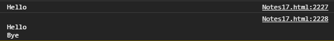
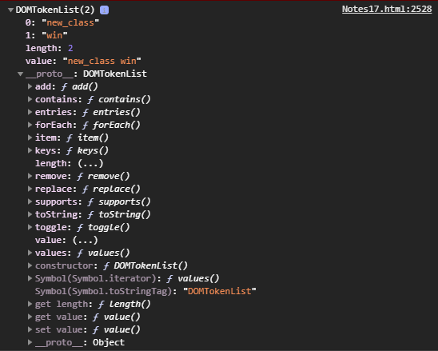
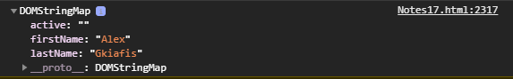
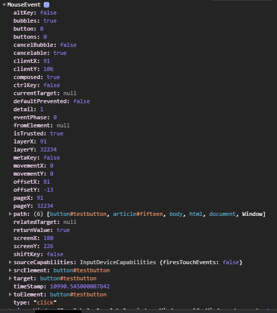
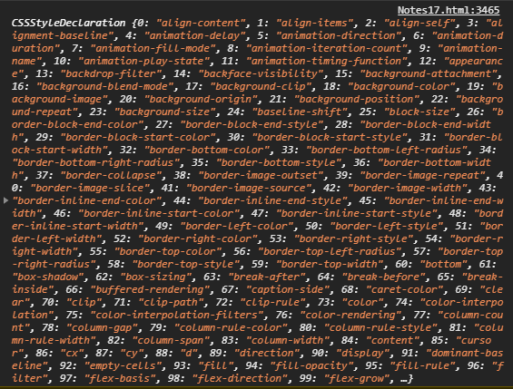
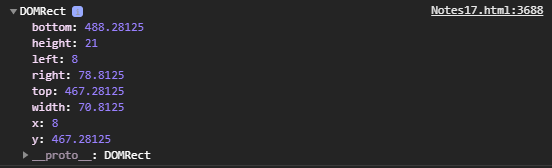

Home Pages:
Informations included in this page:
Changing Attributes and CSS styles
How to remove or replace elements
innerHTML vs textContent vs innerText
window.getComputedStyle(element, pseudoElement)
Element.getBoundingClientRect()
Changing Attributes and CSS styles
How to remove or replace elements
innerHTML vs textContent vs innerText
window.getComputedStyle(element, pseudoElement)
Element.getBoundingClientRect()
When you open any webpage in a browser, the HTML of the webpage is loaded and rendered visually on the screen.
To accomplish that, the browser builds the Document Object Model of the page, wish is an object oriented model of it's logical structure. The DOM of an HTML document can be represented as a nested set of boxes:
JavaScript can be used to manipulate the DOM of a page dynamically to add, delete and modify elements.
The DOM represents a document as a tree structure. HTML elements become interrelated nodes in the tree. All those nodes in the tree have some kind of relations among each other. Nodes can have child nodes. Nodes on the same tree level are called siblings. For example, consider the following structure:
For the example above: <html> has two children (<head>, <body>); <head> has one child (<title>) and one parent (<html>); <title> has one parent (<head>) and no children; <body> has two children (<h1> and <a>) and one parent (<html>);
There is a predefined document object in JavaScript, which can be used to access all elements on the DOM. In other words, the document object is the owner (or root) of all objects in your webpage. So, if you want to access objects in an HTML page, you always start with accessing the document object.
Example:
document.body.innerHTML = "Some text";
As body is an element of the DOM, we can access it using the document object and change the content of the innerHTML property.
All HTML elements are objects, and as we know every object has properties and methods. The document object has methods that allow you to select the desired HTML element. These three methods are the most commonly used for selecting HTML elements.
document.getElementById("id") is used to find an element by id
document.getElementsByClassName("name") is used to find an elements by class name
document.getElementsByTagName("name") is used to find elements by tag name
When you select an element by tag name or class name it creates a collection of all the elements matching this class/tag name, therefore, for it to work you have to use array syntax to choose which element to select, like in the example below:
HTML Code:
<p class="paragraph">Hello World!</p> <p class="paragraph">Hello World!</p>
JavaScript Code:
// You can either write it like this in one line of code document.getElementsByClassName("paragraph")[0].innerHTML = "Eample 1"; // Or you can create a variety first so you can reference it later multiple times var paragraph = document.getElementsByClassName("paragraph"); paragraph[1].innerHTML = "Example 2"
Outcome:
Hello World!
Hello World!
When you select the element by id then since id is unique for each element you simply write the code to select the element and that's it.
Also, something I noticed is that if you write the script before the HTML elements it won't be able to find these, since the script would run before the HTML elements run I guess that makes sense.
By the way, remember the clock I made in page 16 of my notes? I still didn't know how to change HTML elements before so I made it so the whole page gets rewritten in each loop by writing document.body.innerHTML, now that we know how to select HTML elements let's remake it inside a heading.
HTML Code:
<h1 id="clock">I'm a heading</h1>
JavaScript Code:
function addZero(x){ if (x < 10) { return "0" + x; } else { return x; }; }; function clock(){ var d = new Date(); var hours = addZero( d.getHours() ); var minutes = addZero( d.getMinutes() ); var seconds = addZero( d.getSeconds() ); document.getElementById("clock").innerHTML = hours + ":" + minutes + ":" + seconds; } setInterval( clock, 1000 );
Outcome:
Let's create another cool project, a counter, that will change headings one by one, and start all over again when it reaches the end.
HTML Code:
<h1 class="counter">Idk</h1> <h1 class="counter">Idk</h1> <h1 class="counter">Idk</h1>
JavaScript Code:
var MyArray = document.getElementsByClassName("counter"); var MyNumber = 0; var x = 0; function count(){ MyArray[x].innerHTML = MyNumber; x++ MyNumber++ if (x == MyArray.length) { x = 0; }; }; setInterval( count, 1000 );
Outcome:
The way it works is simple actually, first it changes the x number of MyArray which is 0 into MyNumber which is 0, meaning, it changes the content of the first heading into 0, then I simple made it so for each loop MyArray and x get one number higher, and lastly I made it so when x reaches the final heading it returns to 0 (the first heading). The x represents the array values, there are only three, (0, 1, 2), MyNumber is the number of the counter.
So as I said before, when you select an element by tag name or class name an array is created, or to be more accurate a node list is created, which is pretty similar to arrays. So, how do you make it so that all elements with the chosen tag name or class name are selected? To select an element by class name or tag name you gotta specify which one to select, if you want to select the first element with the given tag name for example you would write getElementByTagName("p")[0], if you didn't write [0] it would not work. To select all paragraphs you would have to simply create a loop so that all paragraphs get selected, if you need to check how to create loops in page 14 of my notes, in the code below I made it so all three paragraphs change by using for loop.
HTML Code:
<p class="kok">Hello World!</p> <p class="kok">Hello World!</p> <p class="kok">Hello World!</p>
JavaScript Code:
var arr = document.getElementsByClassName("kok"); var x = 0; for (x; x < arr.length; x++){ arr[x].innerHTML = "New Text"; }
Outcome:
Hello World!
Hello World!
Hello World!
Each element in the DOM has a set of properties and methods that provide information about their relationships in the DM:
element.childNodes - returns a collection of element's child nodes
element.children - returns a collection of the element's children elements
element.firstChild - returns the first child node of an element
element.firstElementChild - returns the first child element of an element
element.lastChild - returns the last child node of an element
element.lastElementChild - returns the last child element of an element
element.hasChildNodes - returns true if an element has any child nodes, otherwise false
node.nextSibling - returns the next node at the same tree level
node.previousSibling - returns the previous node at the same tree level
element.nextElementSibling - returns the next element at the same tree level
element.previousElementSibling - returns the previous element at the same tree level
element.parentNode - returns the parent node of an element.
element.parentElement - returns the parent element of an element.
When you create a node list of the childs of an element for example, you should remember that elements and text are two different nodes, see the code below for example:
HTML Code:
<div id="fr"> <p>Hello</p> <p>Hello</p> </div>
JavaScript Code:
// the arrays I created in previous codes still exist, so I should pick new names each time var coolArray = document.getElementById("fr").childNodes; coolArray[1].innerHTML = "First paragraph"; coolArray[3].innerHTML = "Second paragraph";
Outcome:
Hello
Hello
Let me explain now what happened, [0] would choose the first node, which is the first paragraph, however, we want to change the text node, so that's why we wrote [1], which chose the second node, the text inside the paragraph, for the same reason [3] selected the second text inside the second paragraph, which was the fourth node. .
I just learned there is another way to select the children of an element by creating an array of the children elements and not the children nodes, you can do that by using children property, see the code below for example:
HTML Code:
<div id="fr2"> <p>Hello</p> <p>Hello</p> </div>
JavaScript Code:
var coolArray = document.getElementById("fr2").children; coolArray[0].innerHTML = "First paragraph"; coolArray[1].innerHTML = "Second paragraph";
Outcome:
Hello
Hello
When you create a collection using document.getElementsByClassName(), element.children or whatever other method creates a collection, even though they may seem to you like arrays they aren't linked to the array constructor in the prototype tree, so array methods like forEach can't be used on them, to fix that, you can create an array out of the collection using Array.from() method, like this:
HTML Code:
<p class="ducks_are_evil">Hello World</p> <p class="ducks_are_evil">Hello World</p> <p class="ducks_are_evil">Hello World</p> <p class="ducks_are_evil">Hello World</p>
JavaScript Code:
let paragraphs = Array.from(document.getElementsByClassName("ducks_are_evil")); paragraphs.forEach((x) => x.innerHTML = "New Text");
Outcome:
Hello World
Hello World
Hello World
Hello World
Now I want to talk for few more selector methods that can be useful, the querySelector(), querySelectorAll and closest.
The querySelector() method returns the first element that matches a specified CSS selector in the document:
HTML Code:
<p id="you_suck">Hello guysssssss</p>
JavaScript Code:
document.querySelector("#you_suck").style.color = "red";
Outcome:
Hello guysssssss
The querySelectorAll() method works the same way, however, it returns all elements in the document that match the specified CSS selector, as a static NodeList object.
HTML Code:
<p class="oh_yeah">Owwww YEEAAAAAAAAAAHHH</p> <p class="oh_yeah">Owwww YEEAAAAAAAAAAHHH</p> <p class="oh_yeah">Owwww YEEAAAAAAAAAAHHH</p>
JavaScript Code:
let paragraphs = document.querySelectorAll(".oh_yeah"); paragraphs[1].style.fontWeight = "bold";
Outcome:
Owwww YEEAAAAAAAAAAHHH
Owwww YEEAAAAAAAAAAHHH
Owwww YEEAAAAAAAAAAHHH
And lastly, the closest() method traverses the Element and it's parents towards the document root until it finds a node that matches the provided selector string:
HTML Code:
<div class="dame" style="padding: 40px"> <p class="dame" style="background-color: greenyellow">Text text text text</p> <div style="background-color: white"> <p id="boom">Hello World!</p> </div> </div>
JavaScript Code:
document.querySelector("#boom").closest(".dame").style.backgroundColor = "purple";
Outcome:
Text text text text
Hello World!
As you can see, the paragraph was ignored, because as I said before, closest method climbs the document tree, and checks it's parents, till it finds the closest match, it doesn't check it's parent's childs.
Once you have selected the element(s) you want to work with, you can change their attributes. As we saw before, we can change the text content of an element using the innerHTML property, similarly, we can change the attributes of elements.
For example, we can change the href attribute of a link, let's try this:
HTML Code:
<p> <a id="link" href="">link example</a> </p>
JavaScript Code:
var link = document.getElementById("link"); link.href = "Notes17.html"; link.innerHTML = "Notes17.html";
Outcome:
The style of HTML elements can also be changed using JavaScript, all styles can be accessed using the style object of the element, see code below for example:
HTML Code:
<div class="some-div"></div>
CSS Code:
<Style> .some-div{ width: 200px; height: 200px; background-color: red; margin: 20px auto 20px auto; } </Style>
JavaScript Code:
<script> document.getElementsByClassName("some-div")[0].style.backgroundColor = "green"; </script>
Outcome:
As you probably noticed, if a CSS property uses dashes, the (-) symbol, when you reference it in JavaScript you should remove the dash and capitalize the first letter that's after the dash, for example, background-color property should be referred to as backgroundColor, you could also write x.style['background-color'], that's good too.
Anyway, it is not recommended to change styles with JavaScript, so that your code is more organized, you could simply use JavaScript to change the class of an element and use only CSS for styling.
Use the follow methods to create new nodes:
element.cloneNode() - clones an element and returns the resulting node.
document.createElement(element) - creates a new element node.
document.createTextNode(text) - creates a new text node.
In order to append the created elements or text nodes
in other elements you can use the following methods:
element.appendChild(example) - adds a new child to the selected element as the last child node.
element.append(example1, example2, "example3") - works just like appendChild, however, it can
also directly append DOMStrings, and can also append multiple items at once, something appendChild does not,
append is probably what you wanna use most of the time, since it can do everything
appendChild does and more.
element.instertBefore(example, node2) - inserts example as a child before
HTML Code:
<div id="empty-container"></div>
JavaScript Code:
function example(){ var paragraph = document.createElement("p"); var text = document.createTextNode("Hello World!"); paragraph.appendChild(text); var div = document.getElementById("empty-container"); div.appendChild(paragraph); }; window.addEventListener("load", example());
Outcome:
Alright, let me do the explaining now, first of all, about the window.addEventListener("load", function()) thing, it simply makes it so the example function I made gets executed when window loads, when you edit the HTML of your page, it's good to make the code run only after the window has oppened to avoid bugs.
About the code now, first I created a paragraph and a text node, then I added the text node inside the paragraph, I could had actually added text directly to the paragraph using innerHTML property, however, there is a difference, when using createTextNode everything you add as text will be displayed, so if you were to type <b> bold text <b> the bold tag wouldn't work, and instead you would just get a paragraph displaying the tags on the page as you wrote these, if in the other hand you added the same text using innerHTML the bold tags would work, see example below:
HTML Code:
<div id="karak2"></div>
JavaScript Code:
function example(){ var p = document.createElement("p"); p.innerHTML = "<b> Added text by using innerHTML property. </b> <br>" var text = document.createTextNode("<b> Made this node by using createTextNode method. </b>"); p.appendChild(text); document.getElementById("karak2").appendChild(p); }; window.addEventListener("load", example());
Outcome:
Anyway, let's continue with the explanation, next I simply made a container div for my paragraph, I selected it by id and added the paragraph inside it, that's all.
Now, let's have an example of how we can use the insertBefore method:
HTML Code:
<div id="container2"></div>
JavaScript Code:
function example(){ var p = document.createElement("p"); var nodeOne = document.createTextNode("Node1"); var nodeTwo = document.createTextNode("Node2"); p.appendChild(nodeOne); p.appendChild(nodeTwo); var nodes = p.childNodes; var example = document.createTextNode("Example"); // example, nodeTwo would also work p.insertBefore(example, nodes[1]); document.getElementById("container2").appendChild(p); }; window.addEventListener("load", example());
Outcome:
To remove an HTML element you must select the parent of the element and use the removeChild(node) method.
HTML Code:
<div id="example1"> <p>First Child</p> <p>Second Child</p> <p>Third Child</p> </div>
JavaScript Code:
<script> var element = document.getElementById("example1"); var children = element.children; element.removeChild(children[1]); </script>
Outcome:
First Child
Second Child
Third Child
To replace an HTML element, you can use the element.replaceChild(newNode, oldNode) method, by the way, in the code below I'm also going to use the parentNode property which selects the parent of the selected element, just because I wanted to include it in the notes since it is a cool property.
HTML Code:
<div> <p id="old" >Old paragraph</p> </div>
JavaScript Code:
<script> var oldParagraph = document.getElementById("old"); var parent = oldParagraph.parentNode; var newParagraph = document.createElement("p"); var text = document.createTextNode("New Paragraph"); newParagraph.appendChild(text); parent.replaceChild(newParagraph, oldParagraph); }; </script>
Outcome:
Old paragraph
To create an HTML attribute you should use the createAttribute("attribute") method, then, to set it's value you can use the attribute.value = "value" method, lastly, to add the attribute to an element you should use the element.setAttributeNode(attribute) method or setAttribute(attribute, value) method.
HTML Code:
<p id="example5">Hello World!</p>
CSS Code:
<style> .blue { color:blue; } </style>
JavaScript Code:
<script> var element = document.getElementById("example5"); var att = document.createAttribute("class"); att.value = "blue"; element.setAttributeNode(att); </script>
Outcome:
Hello World!
setAttribute() is better in my opinion, because it also allows you simultaneously create an attribute and set a value for it, while setAttributeNode only lets you set an attribute node that was already precreated using createAttribute.
To remove an attribute simply use the removeAttribute("attribute") property, like in the code below:
HTML Code:
<p id="examplee" class="blue">Hello World!</p>
CSS Code:
<style> .blue { color:blue; } </style>
JavaScript Code:
<script> var element = document.getElementById("examplee"); element.removeAttribute("class"); </script>
Outcome:
Hello World!
About how you can edit the value of an attribute I talked about it before in this section, it's pretty easy actually.
There are few methods that can be used to read or check if an attribute exists in an element, here are the most important ones I found online:
Now that we know how to select, change and create DOM elements, we can use that knowledge to create simple animations. Let's first create two boxes using CSS, the first box will be the container, and we will set it's position to relative, second box will be inside the first one, and it's position will be absolute, meaning we can move it around without it effecting the page stracture, since it's container will be set to position relative we will be able to move our second box relatively to it's parent, I have talked more about how the position property works in my CSS notes, so I recommend you to check this out in order to easier understand the animation I'm going to create.
HTML Code:
<div id="first-box"> <div id="second-box"></div> </div>
CSS Code:
<Style> #first-box { width: 200px; height: 150px; background-color: red; margin: 20px auto 20px auto; position: relative; } #second-box { width: 50px; height: 50px; background-color: blue; position: absolute; left: 0px; } </style>
Outcome:
Now let's make it move around using simple knowledge we have already been taught:
JavaScript Code:
<script> // starting position: var position = 0; // box location: var box = document.getElementById("second-box"); // function that makes box move right: function move_right(){ function move(){ if (position <= 149){ position += 1; box.style.left = position + "px"; } else { clearInterval(interval); move_left(); } } var interval = setInterval( move, 50 ); } // function that makes box move left: function move_left(){ function move2(){ if (position >= 0 ){ position -= 1; box.style.left = position + "px"; } else { move_right(); clearInterval(interval2); } } var interval2 = setInterval(move2, 50); } move_right(); </script>
You can write JavaScript code that executes when an event occurs, such as when a user clicks an HTML element, moves the mouse, submits a form, etc. When an event occurs on a targeted element, a handler function is executed. Here is a list of some common events you should know, there are more, but these are the most used ones:
These events can be added to HTML elements as attributes, for example, you could write onclick="someFunc()" and the chosen function would execute when the element was clicked, however, using events as attributes is considered bad practice, since it's way more organized to add the events in your JavaScript code.
The correct way to add events is by using the addEventListener("event", function) method, I already used it before to make it so the elements changed after the window loaded, here you can see another simple example of a button.
JavaScript Code:
<script> function main_function(){ var button = document.getElementById("mybutton"); function example(){ alert("Hello World!"); } button.addEventListener("click", example); } window.addEventListener("load", main_function); </script>
HTML Code:
<button id="mybutton">Click Me</button>
Outcome:
I used two events for this one, the reason I made the main function was so that the variety is created only after the window has loaded, since if the code ran before the button was created it wouldn't be able to find the button, then the second event I used was the onclick event which I added to the button. One thing that you should remember is that when you use the addEventListener method instead of writing onclick, onload, etct you simply write click, load, etc.
Let's make an example using the onchange event, after you type something inside this input and focus is lost from the element everything you have written will be capitalized:
JavaScript Code:
<script> function main_function(){ var input = document.getElementById("input"); function example(){ input.value = input.value.toUpperCase(); } input.addEventListener("change", example); } window.addEventListener("load", main_function); </script>
HTML Code:
<input type="text" id="input" value="hello world"></input>
Outcome:
If you change the text of the input and press enter or click somewhere so the input loses focus the text will be capitalized.
There are two ways of event propagation in the HTML DOM: bubbling and capturing.
Event propagation allows for the definition of the element order when an event occurs. If you have a paragraph inside a div element, and you have assigned click event to both of them, when you click on the paragraph, which element's click event should be handled first?
In bubbling, the innermost element's event is handled first and then the outer element's event is handled. The <p> element's click event is handled first, followed by the <div> element's click event.
In capturing the outermost element's event is handled first and then the inner. The <div> element's click event is handled first, followed by the <p> element's click event.
To set the event propagation you simply add a third parameter inside the addEventListener() method, you should either write true or false, if you don't use that third parameter it is false by default, false means bubbling, true means capturing.
HTML Code:
<div id="cool_div"> <p id="cool_paragraph">Click Me!</p> </div>
CSS Code:
#cool_div{ background-color: red; width: 200px; height: 100px; }
JavaScript Code:
var div = document.getElementById("cool_div"); var children = div.children; function click_div(){ if ( children.length == 1 ){ var paragraph = document.createElement("p"); var text = document.createTextNode("Created Paragraph"); paragraph.appendChild(text); div.appendChild(paragraph);}; }; function click_paragraph(){ children[1].style.color = "blue"; } div.addEventListener("click", click_div, false); children[0].addEventListener("click", click_paragraph);
Outcome:
Click Me!
In the code above I used false which means bubbling, so when you click the paragraph, the paragraph's event is handled first, and the div's click event is handled second, therefore, since the second child of the div is created after the paragraph's click event is handled, the click_paragraph function cannot find the second child and does nothing, if you click the paragraph again after the second child is created then you will see it will turn to blue.
JavaScript Code:
var div2 = document.getElementById("cool_div2"); var children2 = div2.children; function click_div(){ if ( children2.length == 1 ){ var paragraph = document.createElement("p"); var text = document.createTextNode("Created Paragraph"); paragraph.appendChild(text); div2.appendChild(paragraph);}; }; function click_paragraph(){ children2[1].style.color = "blue"; } div2.addEventListener("click", click_div, true); children2[0].addEventListener("click", click_paragraph);
Outcome:
Click Me!
Now that the Event Propagation is set to true (capturing), the click_paragraph function executes after the click_div function, when you click the paragraph, therefore the second child is found, and the second paragraph turns to blue on the first click.
Now that we know how to edit the DOM and use events lets make a fun project to pracrice, I will make a simple image slider, here is the code:
HTML Code:
<img id="image" src="https://static.toiimg.com/photo/72975551.cms"> <div id="b-container"> <button id="prev">Previous</button> <button id="next">Next</button> </div>
CSS Code:
#image { width: 343px; height: 220px; display: block; margin: auto; border: 2px solid gray; } #b-container{ display: grid; grid-template-columns: 150px 150px; grid-column-gap: 12%; margin: auto; width: 343px; } #prev, #next { width: 150px; height: 100px; margin: 20px auto 20px auto; background-color: green; border: 2px solid gray; color: white; text-shadow: 1px 1px 1px black, -1px -1px 1px black; }
JavaScript Code:
function onload(){ var image = document.getElementById("image"); var prev = document.getElementById("prev"); var next = document.getElementById("next"); var num = 0; var urls = ["https://static.toiimg.com/photo/72975551.cms", "https://cdn.pixabay.com/photo/2015/02/24/15/41/dog-647528__340.jpg", "https://encrypted-tbn0.gstatic.com/images?q=tbn%3AANd9GcQkjmUyRahAl-j_OOJFpM8jl2wbyQ0z7SI_0w&usqp=CAU"]; function next_click(){ num++ if (num >= urls.length){ // num >= 3 num = 0 }; image.src = urls[num]; }; next.addEventListener("click", next_click); function prev_click(){ num-- if ( num < 0){ num = urls.length-1; // 3 - 1 = 2 }; image.src = urls[num]; }; prev.addEventListener("click", prev_click); }; window.addEventListener("load", onload);
Outcome:

I think the code is pretty simple, there isn't much explaining to do, the urls.length method returns the number of values of the array, in the example above we have 3 values, I did urls.length-1 in the second function because the third value of the array is chosen by writing images[2], since we start counting from 0.
HTML5 adds some attriattributes that allow form validation. For example, the required attribute can be added to an input field to make it mandatory to fill in. More complex form validation can be done using JavaScript. For example, let's create a form with two inputs and one button. The text in both fields should be the same and not blank to pass the validation.
HTML Code:
<form id="form" action="https://www.google.com/"> <table> <tr> <td> <label for="input1">Email:</label> </td> <td> <input type="text" id="input1"> </td> </tr> <tr> <td> <label for="input2">Confirm Email:</label> </td> <td> <input type="text" id="input2"> </td> </tr> <tr> <td class="submit-td" colspan="2"> <input type="submit" value="submit" id="submit"> </td> </tr> </table>
CSS Code:
table{ border: 2px solid green; margin: auto; background-color: black; color: lightgreen; } td{ border: 2px solid green; text-align: right; } .submit-td{ padding: 5px; }
JavaScript Code:
function load69(){ var form = document.getElementById("form"); var input1 = document.getElementById("input1"); var input2 = document.getElementById("input2"); function submit(){ if (input1.value != "" || input2.value != ""){ if (input1.value == input2.value){ return true; } else { alert("The two emails do not match"); return false; } } else { alert("Please fill in your email adress") return false } }; function check_submit(){ if (submit() == false){ event.preventDefault(); } }; form.addEventListener("submit", check_submit); }; window.addEventListener("load", load69);
Outcome:
The only thing I haven't explained before is the event.preventDefault(); method, which basically prevents the form from being submitted.
First, lets understand the difference between textContent and innerText, while using these to insert text inside an element, they work the same way:
HTML Code:
<p class="xample"></p> <p class="xample"></p>
JavaScript Code:
let body = document.body; let paragraphs = body.querySelectorAll("p.xample"); paragraphs[0].innerText = "Hello World!"; paragraphs[1].textContent = "Karak10 is stupid!";
Outcome:
However, when used to view content, in the console for example, see how they two work differently:
HTML Code:
<div class="xample2"> <span>Hello</span> <span style="display: none;">Bye</span> </div>
JavaScript Code:
let div = document.body.querySelector(".xample2"); console.log(div.innerText); console.log(div.textContent);
Outcome:
;As you can see, innerText only outputs the text that is displayed on the DOM, while textContent looks inside the HTML and copies the content as it is written inside the HTML, even the break line in the code is rendered.
About innerHTML now, I think I talked about it before, what's so cool about it is that we can inert HTML code using it, if we wrote innerText = "<p>Hello</p>" for example the paragraph elements would be rendered as text, and it wouldn't create a paragraph, if we did the same thing with innerHTML though see what would happen:
HTML Code:
<p class="xample3"></p> <p class="xample3"></p>
JavaScript Code:
let body = document.body; let paragraphs = body.querySelectorAll(".xample3"); paragraphs[0].innerText = "<strong>Hello World!</strong>"; paragraphs[1].innerHTML = "<strong>Hello World!</strong>";
Outcome:
The most basic usage of classList is for adding and removing the classes of HTML elements. As you can guess, this feauture could be used pretty well with CSS to create changes in the DOM very easily.
When you access the classList of an element you can use the add method to add a class and the remove method to remove a class. This is pretty straight forward, but something many people don't know is that you can pass as many classes as you want to thesemethods and they will add/remove the m all.
You can also access the string of all classes by using the value property.
JavaScript Code:
let div = document.querySelector("#class-example"); div.classList.add("new_class", "another_class"); document.write(div.classList.value); div.classList.remove("another_class"); document.write("<br>" + div.classList.value);
Outcome:
If you take a look to it's prototype tree (I talk about what the prototype tree is later in my notes) you can see the value proprety, and all the methods I'm gonna speak about in this section.
Sometimes you need to check to see if an element has a specific class in JavaScript in order to perform a certain operation. This is luckily very easy to do with classList. You can just call the contains method and pass the name of the class you want to check. This method will return true if the element has that class and false if it doesn't.
JavaScript Code:
let div = document.querySelector("#class-example"); document.write(div.classList.contains("new_class")); document.write(div.classList.contains("another_class"));
Outcome:
The toggle method lets you toggle a class on/off depending on if the class is already on the element or not, if you wanted to do this without the toggle method you would do this like this:
JavaScript Code:
let div = document.querySelector("#class-example"); function toggle(x){ if(div.classList.contains(x)){ div.classList.remove(x); } else { div.classList.add(x); } } toggle("new_class"); toggle("another_class"); document.write(div.classList.value);
Outcome:
With the toggle method however we can easier do the same thing like this:
JavaScript Code:
let div = document.querySelector("#class-example"); div.classList.toggle("another_class"); div.classList.toggle("new_class"); document.write(div.classList.value);
Outcome:
This is not the only use of toogle though. Sometimes you need to toggle a class based on a boolean value. For example if the boolean of a variable win is true you want to add the win class to an element, otherwise if win is false you want to remove the win class. Doing so is as simple as below:
JavaScript Code:
let div = document.querySelector("#class-example"); let win = true; div.classList.toggle('win', win); document.write(div.classList.value);
Outcome:
Sometimes you just want to loop through all the classes of an element to do some advanced checks or changes. This is easy to do with the forEach method. The forEach method works just like the array.forEach method.
JavaScript Code:
let div = document.querySelector("#class-example"); div.classList.add("last_class"); let i = 0; div.classList.forEach(x => { i++ if(i < div.classList.length){ document.write(`${x}, `) } else { document.write(`${x}.`) } })
Outcome:
The replace method takes two class names and will replace the first class name with the second class name if the first class name is already on the element. This method will also return true if the replace was successful or false if the element did not contain the first class name:
JavaScript Code:
let div = document.querySelector("#class-example"); document.write(div.classList.replace("win", "lost")); document.write("<br>" + div.classList.value);
Outcome:
Many of the stuff I wrote in this section were taken from this article made by Kyle Cook, a great web developer who also has a YouTube channel called Web Dev Simplified.
One of the best ways to store data in HTML is with data attributes. These data attributes can be used to do some pretty cool thing in CSS as you can see in this article, but data attributes are most useful when combined with JavaScript.
To get started talking about data attributes we need to first have some HTML with data attributes. To create a data attribute in HTML, we just need to add a custom attribute to our HTML element that starts with data-.
Example:
<div id="test-div" data-first-name="Alex" data-last-name="Gkiafis" data-active ></div>
We now have a div with three custom data attributes. Now let's move over to JavaScript and see how we would access thse data attributes.
JavaScript Code:
let div = document.getElementById("test-div"); console.log(div.dataset);
Outcome:
The dataset property on an element will return a DOMStringMap which is essentially just an object that contains all the custom data attributes of an element.
In the image above you should notice two interesting things, firstly, all of our properties are converted from snake case, first-name, to camel case, firstName. This is because in JavaScript object properties are primarily written as camel case so this just makes working with the JavaScript object musch easier.
Secondly, you will notice that our active property has a value of "". This is because any data attribute without a value is assumed to have an empty string as it's value.
In order to access an individual data attribute we can just access it like a property on an object since dataset is just an object.
JavaScript Code:
let div = document.getElementById("test-div"); document.write(`${div.dataset.firstName} ${div.dataset.lastName}`);
Outcome:
In order to create a new data attribute using JavaScript we just need to add a new property to the dataset object with a value, just like how we would do it for a normal object:
JavaScript Code:
let div = document.getElementById('test-div'); div.dataset.test = "Hello World!"; document.write(div.dataset.test);
Outcome:
This will update the dataset object and our HTML which means this could come in handy with CSS, imagine, adding an attribute or changing the value of one could immediately update the CSS of the element.
To update the value of a data attribute you can easily do that just like you would in a normal object. We just need to set the value of our dataset property to a new value and it will update the HTML for us.
JavaScript Code:
let div = document.getElementById("test-div"); div.dataset.active = "True"; document.write(div.dataset.active);
Outcome:
Deleting data attributes is a bit different since we need to actually remove the property from our object. This is because if we try setting the value to undefined or null the dataset object will still have a reference to that property and will set the value of our HTML data attribute to a string of null or undefined.
To delete an object property we need to use the delete kayword to remove it completely from the object like in the example below:
JavaScript Code:
let div = document.getElementById("test-div"); delete div.dataset.active; document.write(div.dataset.active);
Outcome:
HTML Code:
<button data-modal-id="modal-1">Open Modal 1</button> <button data-modal-id="modal-2">Open Modal 2</button> <div id="modal-1" class="hide">Modal 1</div> <div id="modal-2" class="hide">Modal 2</div>
CSS Code:
.hide{ display: none; } .show{ display: unset; }
JavaScript Code:
let buttons = document.querySelectorAll("[data-modal-id]"); for(let button of buttons){ let modalId = button.dataset.modalId; let div = document.getElementById(modalId); button.addEventListener("click", () => div.classList.toggle("show")); }
Outcome:
To create this section I copied a lot of stuff from this article, it was made by Kyle Cook, a really good web developer that creates really cool YouTube tutorials and also has a great blog, as you can see by your self if you read his articles, usually, when I find stuff online to study and write about them in my notes I need to simplify the stuff using easier words and explanations, for this article however, I couldn't possible make it more simple, his nick name is Web Dev Simplified after all.
When you add an event to an element you need to add a function to be executed as the second parameter, something you may not know however is that this function can take a parameter which will reference the event object:
HTML Code:
<button id="testbutton">Click me dude</button>
JavaScript Code:
let button = document.querySelector("#testbutton"); button.addEventListener("click", e => console.dir(e));
Outcome:
As you can see, this object can be pretty useful, since it contains a lot of information about the event, such as which element has triggered it, etc.
The even object has a lot of useful properties you can use, however, the most common one that's used is probably the target property, which returns the element tha triggered the event.
HTML Code:
<button id="buttontest2">Click me</button> <div id="divtest" style="margin-top: 20px;"></div>
JavaScript Code:
let button = document.getElementById("buttontest2"); let div = document.getElementById("divtest"); button.addEventListener("click", e => { div.textContent = e.target; })
Outcome:
So, I already talked about this before in this page, but I think I should probably explain these a little better, and in more depth perhaps
When an element is assigned a click event and it's parent, and grandparent also are assigned click events, when the child is clicked, the JavaScript will read the click events from parent to child, so it will start from the grandparent, then to parent and then to the child, after that, the events, by default, will be executed in order from child, to parent, to grandfather, that's what we call bubbling, to remember it, simple remember that bubbles go up, just like how the events are triggered from the buttom to the top of the document tree.
If you turned on capture mode for the parent's click event, when JavaScript checked the click events from grandparent, to parent and finally to child, it would read that parent's click event is on capture mode and would execute it before the child's click event, then, after child's click event was triggered it would start executing the other click events towards the document tree, so it would execute grandparent's click event| next, and at the end, the events would had be executed in this order: parent, child, grandparent.
HTML Code:
<div id="D-grandparent"> <div id="D-parent"> <div id="D-child"> <div style="font-weight: bold;">Click me</div> </div> </div> </div>
CSS Code:
#D-grandparent{ width: 200px; height: 150px; background-color: orange; padding: 20px; margin: 20px auto 20px auto; } #D-parent{ background-color: lightblue; width: 100%; height: 100%; display: grid; justify-items: center; } #D-child{ background-color: yellow; width: 75%; height: 75%; margin: auto; display: grid; justify-items: center; align-items: center; }
JavaScript Code:
let grandparent = document.getElementById("D-grandparent"); let parent = document.getElementById("D-parent"); let child = document.getElementById("D-child"); document.addEventListener('click', e => console.log('Document Capture'), { capture: true}); document.addEventListener('click', e => console.log('Document Bubble')); grandparent.addEventListener('click', e => console.log('Grandparent Capture'), { capture: true }); grandparent.addEventListener('click', e => console.log('Grandparent Bubble')); parent.addEventListener('click', e => console.log('Parent Capture'), { capture: true }); parent.addEventListener('click', e => console.log('Parent Bubble')); child.addEventListener('click', e => console.log('Child Capture'), { capture: true }); child.addEventListener('click', e => console.log('Child Bubble'));
Outcome:
So, let's continue talking about bubbling and capture a little more, if you wanted only the child's click event to trigger and prevent the other click events how exactly would you do this? The stopPropagation() method can solve this problem very easily, whenever the stopPropagation() method is called, the event propagation will stop:
JavaScript Code:
let grandparent = document.getElementById("D-grandparent2"); let parent = document.getElementById("D-parent2"); let child = document.getElementById("D-child2"); grandparent.addEventListener('click', e => console.log("Grandparent")); parent.addEventListener('click', e => console.log("Parent")); child.addEventListener('click', e => { console.log("Child") e.stopPropagation(); });
Outcome:
If you want an event listener to only run once and then be removed, the easiest way to do that is like this:
HTML Code:
<div id="somethingb"> <button>Click Me </div>
JavaScript Code:
let div = document.getElementById('somethingb'); let button = document.querySelector('#somethingb button'); button.addEventListener('click', e => div.append("Hello"), { once: true });
Outcome:
If you want the event to be removed under other circumstances you could use the removeEventListener(event, function) method, however, in order to do that, the eventListener should be using an external function reference and not an anonymous function so that we can use the same function inside the removeEventListener method, that's because an element could have multiple functions executed by the same event, like before that I made click event execute two different functions one to demonstrate capture and other to demonstrate bubbling, anyway, that's why the function of the wanted eventListener should be able to be referenced, like in the example below:
HTML Code:
<div id="diva"> <button>Click Me</button> </div>
JavaScript Code:
let div = document.getElementById("diva"); let button = document.querySelector("#diva button"); let i = 0; function example(){ i++ if(i <= 2){ div.append("foo"); } else { div.removeEventListener('click', example); } } button.addEventListener('click', example);
Outcome:
Now I will show you a really cool way to deligate events, as we learned before, if we assign an event to the parent of an element and we click the child, the parent's click event will trigger too, so, based on that, we could create a function like the one below:
HTML Code:
<div id="diva2"> <button>Click Me</button> </div>
JavaScript Code:
function addGlobalEvent(type, selector, callback){ document.addEventListener(type, e =>{ if (e.target.matches(selector)){ callback(e); } }) } addGlobalEvent('click', '#diva2 button', (x) =>{ document.getElementById("diva2").append("foo"); });
Outcome:
Let me explain now, e.target.matches(selector) method, takes a CSS selector and returns true if it matches with the target element (the element you clicked), if not it returns false. Because of that, now, if we wanted to add an event listener to many similar elements we could just give them a same class or something, and by running a single function assign the event listener to all of them, without the need of a loop. Also, since we are assigning the event to the document and what it does is simply check if a wanted selector it the target or not, if we created a new element later with asynchronous code, or we created it later on the script, it wouldn't have any problems, like it would if we had used loops to simultaneously add the event to each element since by the time the new element was created the loop would had finished.
Here is a video that helped me a lot, it goes over everything I include in this section, in 18 minutes, but he does it better of course:
The getComputedStyle() method gets all the actualy (computed) CSS properties and values of a specified element.
The computed style is the style actually used in displaying the element, after styling from multiple sources has been applied. Style sources can include: internal style sheets, external style sheets, inherited styles and browser default styles.
The getComputedStyle() method returns a CSSStyleDeclaration object.
HTML Code:
<p class="haaa">Hello World!</p>
CSS Code:
.haaa{ background-color: rgb(250, 236, 36); width: 50px; }
JavaScript Code:
let paragraph = document.querySelector(".haaa"); console.log(window.getComputedStyle(paragraph));
Outcome:
Hello World!
To get the value of a wanted property you can use getPropertyValue method:
JavaScript Code:
let paragraph = document.querySelector(".haaa"); document.write(window.getComputedStyle(paragraph).getPropertyValue("background-color"));
Outcome:
The second parameter to getComputedStyle() method can be used to specify a pseudo-element to match and it's optional. A pseudo-element is a keyword added to a selector that lets you style specific part of the selected element(s), for example, ::first-line can be used to change the font of the first line of a paragraph.
So, what's the different between window.getComputedStyle(element) and element.style? First of all, the getComputedStyle method can be only used to read properties, while style can be used to change or set properties too. Except from that, they have also one more difference, getComputedStyle() method returns an object with all the styles used to display the element from multiple sources, while element.style returns an object that contains only the inline styles used on the element.
The setProperty(propertyName, value, priority) method can be used to set a new property to an element.
HTML Code:
<p class="ahh">Hello World!</p>
JavaScript Code:
let paragraph = document.querySelector(".ahh"); paragraph.style.setProperty("background-color", "red"); paragraph.style.setProperty("color", "white"); paragraph.style.setProperty("width", "50px");
Outcome:
Hello World!
The getPropertyValue(property) method returns the value of the specified property, however, as I explained in the pervious section, the style property returns an object that contains only the inline style properties, any properties added from external style sheets, inherited styles and browser default styles will not be found, to read these you will need to use window.getComputedStyle(element) instead:
HTML Code:
<div class="okd" style="width: 50px;">Hello World!</div>
CSS Code:
.okd{ background-color: red; color: white; margin-bottom: 20px; }
JavaScript Code:
let div = document.querySelector(".okd"); document.write(div.style.getPropertyValue("color") === ""); document.write(div.style.getPropertyValue("width"));
Outcome:
The Element.getBoundingClientRect() method returns a DOMRect object providing information about the size of an element and it's position relative to the viewport. What's the viewport you may wonder, well, the viewport represents the area of the page that is currently visible, it will not give you the position of it relative to the start of the page, it will give you the position of it relative to the edges of the window, which means, if you scroll down and the element is exactly at the edge of the top of the window then the Y position is gonna be zero, since the offset between the top of the window and the top of the element will be zero.
HTML Code:
<button id="exx">Click me!</button> <div id="ccontainer"></div>
JavaScript Code:
let button = document.querySelector('#exx'); let container = document.querySelector('#ccontainer'); button.addEventListener('click', (e) => { let box = button.getBoundingClientRect(); console.dir(box); container.innerText = `${box.y} = ${box.top} = ${box.bottom - box.height}`; })
Outcome:
The width and height properties of the DOMRect object include the padding and border-width of the element, not only the content.
If you need the bounding rectangle relative to the top-left corner of the document, just add the current scrolling position to the top and left properties, these can be obtained using window.scrollX and window.scrollY, this way you get a bounding rectangle which is independent from the scrolling position.
HTML Code:
<button id="bttns">Click Me!</button> <div id="ahooo"></div>
JavaScript Code:
let button = document.querySelector('#bttns'); let container = document.querySelector('#ahooo'); button.addEventListener('click', (e) => { let box = button.getBoundingClientRect(); container.innerText = box.top + window.scrollY; })
Outcome:
In this section I will point out the difference between those properties of the even object. Those properties can be used to take the position of the cursor of the client, however, each works differently.
clientY will return the distance between the top of the window and the cursor, pageY will returned the distance between the top of the document and the cursor, screenY will return the distance between the edge of the device screen and the cursor, and lastly, offsetY will return the distance between the clicked element's top and the cursor, just as demonstrated below:
HTML Code:
<div id="clickme"></div>
CSS Code:
#clickme{ width: 200px; height: 150px; background-color: yellow; border: 3px solid black; margin: 20px auto 20px auto; cursor: default; user-select: none; }
JavaScript Code:
let div = document.querySelector('#clickme'); div.addEventListener('click', (e) => { let [cY, pY, sY, oY] = [e.clientY, e.pageY, e.screenY, e.offsetY]; div.innerHTML = `clientY = ${cY}<br>\ pageY = ${pY}<br>\ screenY = ${sY}<br>\ offsetY = ${oY}`; })
Outcome:
Here is a video that explains everything pretty well in under four minutes:
Many people incorrectly assume that mouseleave & mouseenter work the same way with mouseout & mouseover, while in reality they don't, in most cases the results they give are the exact same, but the way they work behind the scenes is different.
So, in order to understand the difference, let's try to compare the two, I will use console.log() so we can clearly see when each event is triggered:
HTML Code:
<div id="parentD"> <div id="childD">mouseEnter and mouseLeave</div> </div> <div id="containerD"></div>
CSS Code:
#parentD{ width: 400px; height: 140px; background-color: #333; border: 3px solid black; margin: 20px auto 20px auto; display: flex; align-items: center; justify-content: center; } #childD{ background-color: yellow; width: 70%; height: 70px; border: 3px solid black; text-align: center; line-height: 70px; font-weight: bold; }
JavaScript Code:
let parent = document.querySelector('#parentD'); let child = document.querySelector('#childD'); let container = document.querySelector('#containerD'); parent.addEventListener('mouseenter', (e) => { container.innerText += " {entered parent} "; }); parent.addEventListener('mouseleave', (e) => { container.innerText += " {left parent} " }) child.addEventListener('mouseenter', (e) => { container.innerText += " {entered child} "; }); child.addEventListener('mouseleave', (e) => { container.innerText += " {left child} " }) document.addEventListener('click', (e) => { container.innerText = ""; })
Outcome:
Hover your mouse over the elements above to see when each event is triggered, to clear the logs just click anywhere on the document.
It works pretty much as we expected it to work, let's now however write the same code using mouseover and mouseout:
JavaScript Code:
let parent = document.querySelector('#parentD'); let child = document.querySelector('#childD'); let container = document.querySelector('#containerD'); parent.addEventListener('mouseover', (e) => { container.innerText += " {entered parent} "; }); parent.addEventListener('mouseout', (e) => { container.innerText += " {left parent} " }) child.addEventListener('mouseover', (e) => { container.innerText += " {entered child} "; }); child.addEventListener('mouseout', (e) => { container.innerText += " {left child} " }) document.addEventListener('click', (e) => { container.innerText = ""; })
Outcome:
So, I want you to hover your mouse over the element and notice what happens when you enter or leave the child element, when you enter the child element the following events will trigger in order: {left parent} {entered child} {entered parent}, when you leave the child element the following events will trigger in order: {left child} {left parent} {entered parent}.
So after your cursor moves to a different element, the mouseout event is triggered for all the elements it was currently inside, then it checks and triggers the mouseover event for all the elements you hover your mouse over again.
The outcome will in most cases be the same with the outcome mouseenter and mouseleave gives us, however, if used together with bubbling and capture then mouseover and mouseout could come in handy when you need to create some more complicated behaviour with a lot of events and stuff, for example, you could use stopPropagation() method to make it so after you enter the child the propagation stops, this way only the parent's mouseout and child's mouseover events would trigger.
First, let's talk about mousedown, it will trigger whenever a mouse button is pushed down on the specified element, it doesn't matter whether you clicked the left mouse button, the right mouse button or the middle mouse button (the one used to scroll), it will always trigger.
The mouseup event will trigger whenever a mouse button is released, it works for all mouse buttons as well, and it will work even if you click outside the element then mouve the cursor over the element and release after, as long as a mouse button is released while the cursor is over the element the event will trigger.
HTML Code:
<div id="cme">Click Me</div> <div id="cntainera"></div>
CSS Code:
#cme{ width: 100px; height: 90px; text-align: center; line-height: 90px; background-color: yellow; border: 3px solid black; margin: auto; user-select: none; }
JavaScript Code:
let button = document.querySelector('#cme'); let container = document.querySelector('#cntainera'); button.addEventListener('mousedown', (e) => { container.innerText = "mousedown"; }); button.addEventListener('mouseup', (e) => { container.innerText = "mouseup"; });
Outcome:
The click event will only trigger when the left mouse button is pressed and released on the same object. The contextmenu event will trigger when the right mouse button is pressed and released on the same object and the context menu opens. Lastly, the dblclick event triggers when an element is double clicked, the clicks should be made fast for it to work.
JavaScript Code:
let button = document.querySelector('#cme'); let container = document.querySelector('#cntainera'); button.addEventListener('click', (e) => { container.innerText = "click"; }); button.addEventListener('dblclick', (e) => { container.innerText = "dblclick"; }); button.addEventListener('contextmenu', (e) => { container.innerText = "contextmenu"; });
Outcome:
This event is one of my favorites, because it triggers every single time your cursor moves on the specified element, this event comes in very handy, if you want to create costum cursors, or cursor trails that follow your cursor as it moves, here is an example:
HTML Code:
<div id="Pcontainer"> <div id="dio"></div> </div>
CSS Code:
#Pcontainer{ box-sizing: border-box; width: 303px; height: 100px; border: 3px solid black; background-color: yellow; margin: auto; position: relative; cursor: none; } #dio{ box-sizing: border-box; position: absolute; width: 10px; height: 10px; border: 3px solid black; background-color: red; border-radius: 50%; cursor: none; }
JavaScript Code:
let parent = document.querySelector('#Pcontainer'); let circle = document.querySelector('#dio'); let parent_width = parseFloat(getComputedStyle(parent).getPropertyValue('width')); let parent_height = parseFloat(getComputedStyle(parent).getPropertyValue('height')); let circle_width = parseFloat(getComputedStyle(circle).getPropertyValue('width')); let circle_height = parseFloat(getComputedStyle(circle).getPropertyValue('height')); let x_limit = parent_width - circle_width; let y_limit = parent_height - circle_height; parent.addEventListener('mousemove', (e) => { let x = e.offsetX; let y = e.offsetY; if( e.target === parent){ if( x < x_limit ){ circle.style.left = x + 'px'; } if ( y < y_limit ){ circle.style.top = y + 'px'; } } });
Outcome:
There are four touch events you can use, and with only those four events you should find ways to achieve whatever it is you want to achieve, there are no rotate, zoom or swipe events, to achieve such effects you will need to use touchstart, touchend, touchmove and touchcancel events.
Your best friend while working with such events, as usually will be the event object, the event object while using touch events however provides you with some extra properties, which are touches, targetTouches and changedTouches.
When you put your first finger down, all three properties will each create a list with information about the touch. When you put a second finger down, touches will have two items, each being an object containing information about each touch. targetTouches will have two items only if the touch was done in the same target as the first touch. Lastly changedTouches will have the information related to the second finger, because that's what caused the event.
If you put two fingers down at exactly the same time, it's possible to have two items in changedTouches, one for each finger. If you put a finger down, and then move it, the only list that will change is changedTouches and will contain information related to the finger that moved, if more than one finger moved then it would contain information for all the touches which moved, each list would be a different item in the array.
When you lift a finger, it will be removed from touches, targetTouches and will appear in changedTouches since it's what caused the event. Lastly, removing my last finger will leave touches and targetTouches empty, while changedTouches will contain information for the last finger.
HTML Code:
<div id="touchme">Touch me</div>
CSS Code:
#touchme{ width: 100px; height: 100px; background-color: yellow; border: 3px solid black; border-radius: 50%; margin: 20px auto 20px auto; text-align: center; display: grid; align-items: center; font-weight: bold; }
JavaScript Code:
let div = document.querySelector('#touchme'); div.addEventListener('touchstart', (e) => { console.dir(e.touches); console.dir(e.targetTouches); console.dir(e.changedTouches); }); }
Outcome:
All lists give the same results when only one simple touch is made, I wanted to try more kind of touches but I don't think I can do this on a computer, right now I'm using a chrome tool that allows me to trigger touch events with mouse, but I don't know how to trigger more than one touch ever at the same time, I will probably play around more with the events later on my phone.
Alright, so, touchstart triggers when you put your finger on the screen, and touchend happens when you lift your finger from the screen, that leaves us with the two last touch events, the touchcancel event will trigger if for whatever reason the touch gets cancelled without you lifting your finger from the screen, that could happen because of a low battary warning for example or anything else I guess, the touchmove event now is an event that continiously triggers as you move your finger on the screen.
I cannot test if the code bellow works as expected or not since I'm not using a phone, but hopefully what I made bellow demonstrates the difference between touches, targetTouches and changedTouches, try using multiple fingers and stuff to see the results:
JavaScript Code:
let div = document.querySelector('#touchme2'); let container = document.querySelector('#cotainer'); // when you put a finger on the element div.addEventListener('touchstart', (e) => { let [cT, T, tT] = ["", "", ""]; for(let i of e.changedTouches){ cT += ` {clientY: ${i.clientY}}`; } for (let i of e.targetTouches){ tT += ` {clientY: ${i.clientY}}`; } for(let i of e.touches){ T += ` {clientY: ${i.clientY}}`; } container.innerHTML = `Touches: ${T} <br> \ ChangedTouches: ${cT} <br> \ TargetTouches: ${tT}`; }); // when you lift a finger from the element div.addEventListener('touchend', (e) => { let [cT, T, tT] = ["", "", ""]; for(let i of e.changedTouches){ cT += ` {clientY: ${i.clientY}}`; } for (let i of e.targetTouches){ tT += ` {clientY: ${i.clientY}}`; } for(let i of e.touches){ T += ` {clientY: ${i.clientY}}`; } container.innerHTML = `Touches: ${T} <br> \ ChangedTouches: ${cT} <br> \ TargetTouches: ${tT}`; }); // when you move a finger on the element div.addEventListener('touchmove', (e) => { let [cT, T, tT] = ["", "", ""]; for(let i of e.changedTouches){ cT += ` {clientY: ${i.clientY}}`; } for (let i of e.targetTouches){ tT += ` {clientY: ${i.clientY}}`; } for(let i of e.touches){ T += ` {clientY: ${i.clientY}}`; } container.innerHTML = `Touches: ${T} <br> \ ChangedTouches: ${cT} <br> \ TargetTouches: ${tT}`; });
Outcome:
Let's actually try to use that knowledge to create something, let's try to make a simple swipe effect using pure vinally JavaScript:
HTML Code:
<div class="phone"> <div id="page1"><span class="center">Page1</span></div> <div id="page2"><span class="center">Page2</span></div> </div>
CSS Code:
.phone{ width: 300px; height: 400px; border: 3px solid black; margin: 20px auto 20px auto; overflow: hidden; position: relative; background-color: black; } #page1{ width: 100%; height: 100%; background-color: red; position: absolute; } #page2{ width: 100%; height: 100%; background-color: yellow; position: absolute; left: 100%; } .center{ position: absolute; top: 50%; left: 50%; transform: translate(-50%, -50%); font-size: 300%; background-color: unset; }
JavaScript Code:
let phone = document.querySelector('.phone'); let page1 = document.querySelector('#page1'); let page2 = document.querySelector('#page2'); let phone_width = parseFloat(getComputedStyle(phone).getPropertyValue("width")); let startPosition; // page 1 touch events page1.addEventListener('touchstart', (e) => { startPosition = e.touches[0].clientX; }) page1.addEventListener('touchmove', (e) => { let offset = startPosition - e.touches[0].clientX; let p2_left = parseFloat(getComputedStyle(page2).getPropertyValue("left")); if( offset > 0 && p2_left > 1){ page1.style.transition = "0s"; page2.style.transition = "0s"; page1.style.left = - offset + "px"; page2.style.left = phone_width - offset + "px"; e.preventDefault; } }) page1.addEventListener('touchend', (e) => { let offset = startPosition - e.changedTouches[0].clientX; let diff = phone_width / 2.5; if ( offset >= diff) { page1.style.transition = "1s"; page2.style.transition = "1s"; page1.style.left = "-" + 100 + "%"; page2.style.left = 0 + "px"; } else { page1.style.transition = "1s"; page2.style.transition = "1s"; page1.style.left = 0 + "px"; page2.style.left = 100 + "%"; } }) // page2 touch events page2.addEventListener('touchstart', (e) => { startPosition = e.touches[0].clientX; }) page2.addEventListener('touchmove', (e) => { let offset = startPosition - e.touches[0].clientX; let p1_left = parseFloat(getComputedStyle(page1).getPropertyValue("left")); if( offset < 0 && p1_left < 0){ page1.style.transition = "0s"; page2.style.transition = "0s"; page2.style.left = -1 * offset + "px"; page1.style.left = - phone_width - offset + "px"; e.preventDefault; } }) page2.addEventListener('touchend', (e) => { let offset = e.changedTouches[0].clientX - startPosition; let diff = phone_width / 2.5; if ( offset >= diff ) { page1.style.transition = "1s"; page2.style.transition = "1s"; page1.style.left = 0 + "px"; page2.style.left = 100 + "%"; } else { page1.style.transition = "1s"; page2.style.transition = "1s"; page1.style.left = "-" + 100 + "%"; page2.style.left = 0 + "px"; } })
Outcome:
Sometimes, you want to use an event that doesn't exist, for example, you want something to happen when something else happens, that's when custom events can be created and used to achieve such things.
To create a custom event you should use the CustomEvent constructor, by writing new CustomEvent('name', {detail: value}), the first parameter of that event should be the name of the event, while the second parameter is >optional and allows you to pass information inside it to later use when event triggers.
To trigger a custom event you should use the dispatchEvent(event, target) method, the target lets you specify what e.target should be, so let's try this out now with a simple example to help us understand the syntax better:
JavaScript Code:
let div = document.getElementById('cttainer'); let changedColor = new CustomEvent('changed-color', {detail: Date.now()}); let handlers = { set: function(target, prop, value){ target[prop] = value; if(prop == 'paragraphColor'){ console.log('red'); div.dispatchEvent(changedColor, div); } } } let divObj = new Proxy({ name: 'div', id: 'cttainer', source: div }, handlers); div.addEventListener('changed-color', (e) => { console.log(e.target); e.target.style.backgroundColor = divObj.paragraphColor; e.target.innerHTML = e.detail; }); divObj.paragraphColor = 'red';
Outcome:
You can either add audio to your website using the <audio> tag or create it directly through JavaScript using the Audio() constructor.
All you have to do is write new Audio(url) and this will create an audio object for you to use. The preload property of the audio object will be by default set to auto, and the src property will be set to the url you used when making the object or null if no URL was given. The browser begins to asychronously load the media source before returning the new object.
There are three ways you can tell when enough of the audio file has loaded to allow playback to begin:
To play the audio you should use the play() method, to pause the audio you should use the pause() method. Even if you remove every reference of the audio then element it self will continue to exist, therefore, joining the garbage collection and effecting the performance, to remove the element you should do it as you would to any other element, by using the remove() method.
When an audio is playing it cannot play more than once at the same time, so even if the play() method is called, if it's already playing nothing is gonna happen. This can be a problem when wanted to use sound effects in games where you want the sound to be able to play multiple times at the same time. To fix that problem, we could use cloneNode() method to clone the element and then use play() method.
Lastly, I want to talk about two properties which are very important, the duration property which returns the duration of the audio in seconds and the currentTime property which can set or return the current position (in seconds) of the audio playback. Also, one last property is the volume property which allows you to change the volume, it takes a value between 0 and 1, where 1 is 100% and 0 is 0%. Those properties can be very useful if you want to make custom audio controls for example.
JavaScript Code:
let button = document.querySelector('#play-music'); let audioObj = new Audio("https://dl.dropbox.com/s/ywsabqq6209qsrg/\ Vine%20Boom%20Sound%20Effect%20%28Longer%20Verison%20For%20Real%29%20\ %28Read%20Description%20Please%29.mp3?dl=0"); let arr = new Array(); audioObj.addEventListener('canplaythrough', (e)=>{ button.addEventListener('click', (e)=>{ arr.push(audioObj.cloneNode()); arr[0].currentTime = 0.5; arr[0].play(); setTimeout(()=>{ arr[0].remove(); arr.splice(0, 1); }, audioObj.duration); }); });
Outcome: